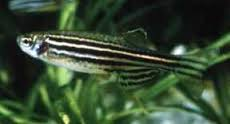
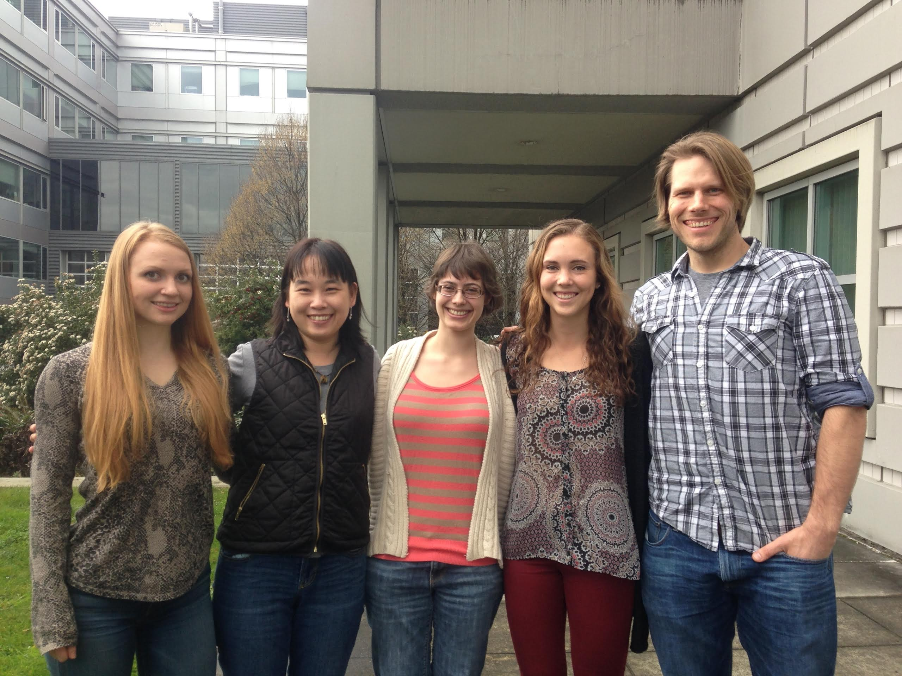
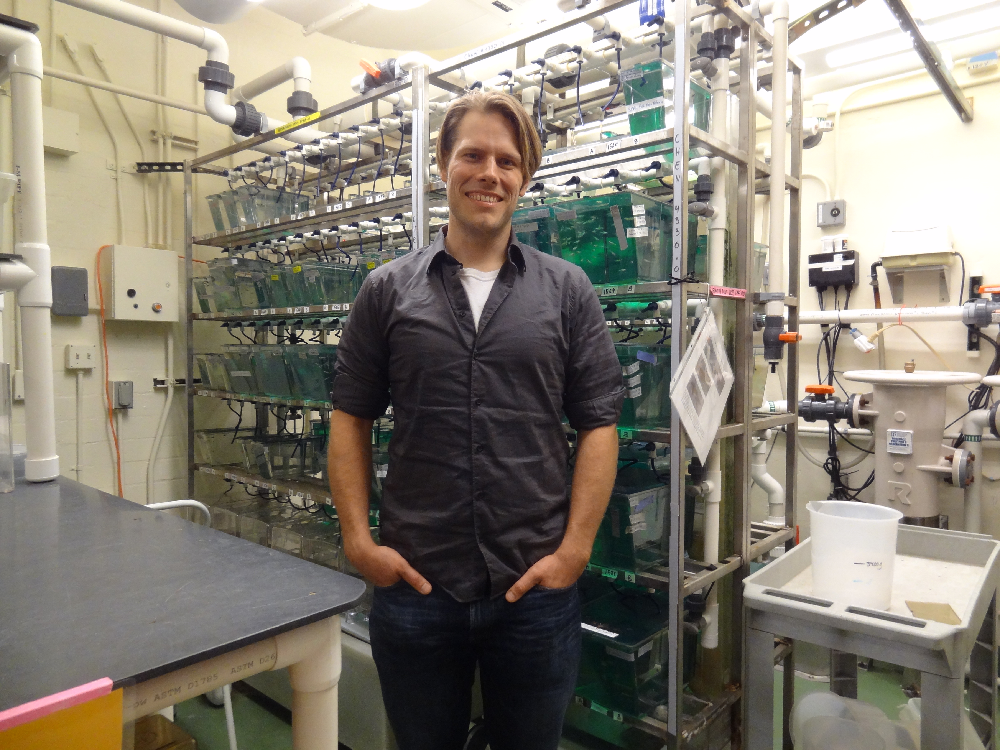
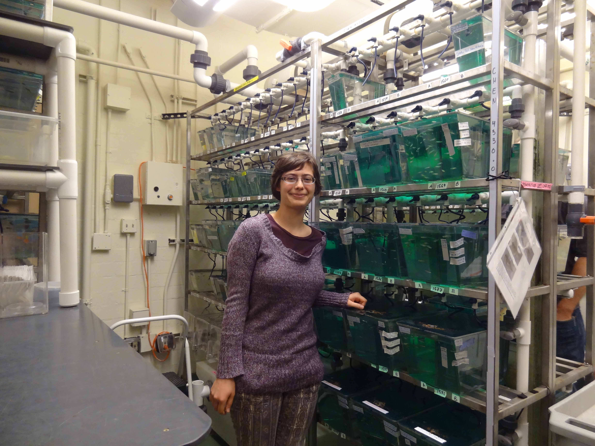
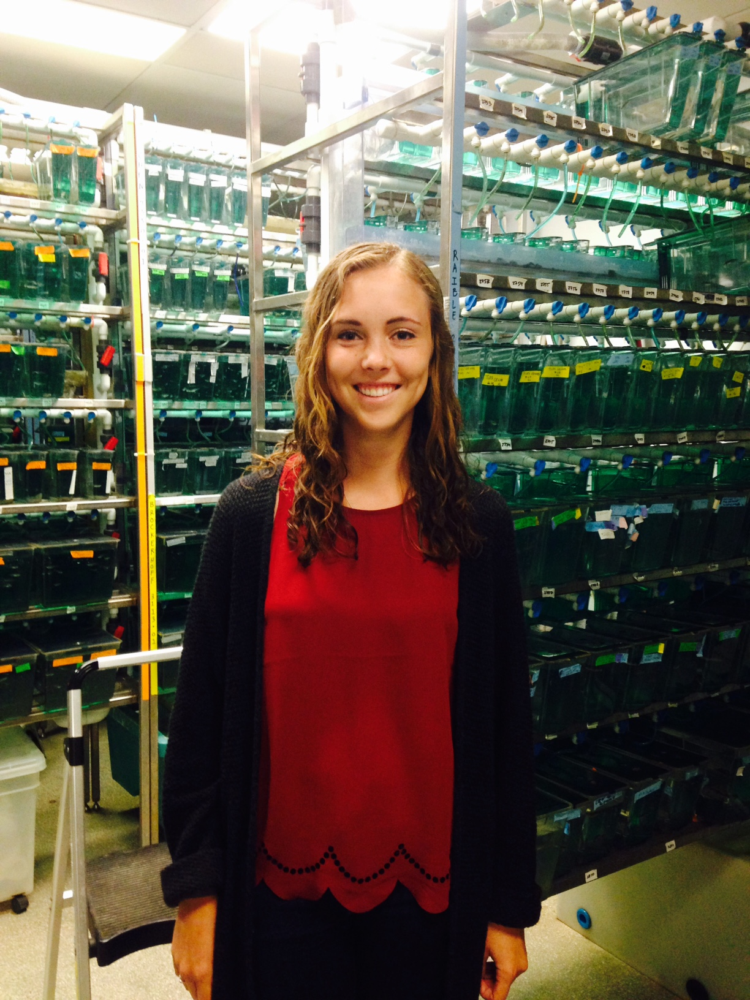
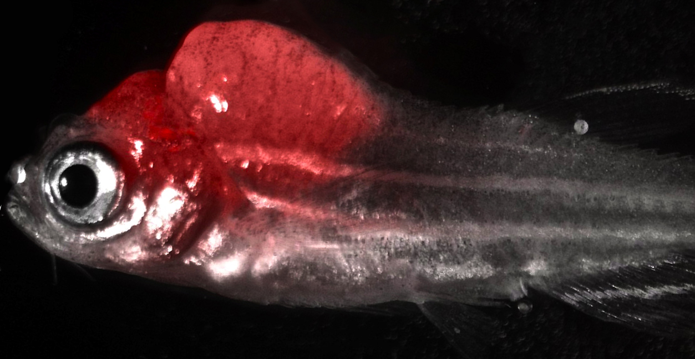
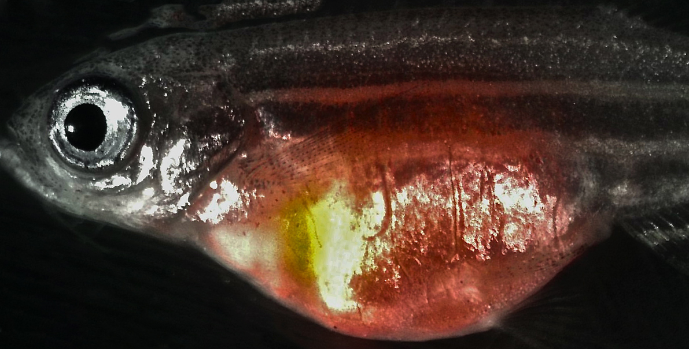

Research Interest
Publications
Lab Members
Image Gallery

|
- Our main research interest is in understanding pathogenesis of cancer using zebrafish and mammalian experimental systems. My current research focuses on dissecting cellular and molecular mechanisms underlying pediatric embryonal rhabdomyosarcoma, in particular the key events regulating tumor differentiation, relapse and metastasis. My laboratory utilizes chemical genetic and genomic approaches to identify key driver events of embryonal rhabdomyosarcoma.
- Chen EY, Deran MT, Ignatius MS, Grandinetti KB, Clagg R, McCarthy KM, Lobbardi RM, Brockmann J, Keller C, Wu X, Langenau DM. Glycogen synthase kinase 3 inhibitors induce the canonical WNT/β-catenin pathway to suppress growth and self-renewal in embryonal rhabdomyosarcoma. Proc Natl Acad Sci U S A. 2014 Apr 8;111(14):5349-54. PMID: 24706870.
- Selvarajah S, Pyne S, Chen E, Sompallae R, Ligon AH, Nielsen GP, Dranoff G, Stack E, Loda M, Flavin R. High-Resolution Array CGH and Gene Expression Profiling of Alveolar Soft Part Sarcoma. Clin Cancer Res. 2014 Mar 15;20(6):1521-30. PMID: 24493828, PMCID: PMC3962657.
- Chen EY, Dobrinski KP, Brown KH, Clagg R, Edelman E, Ignatius MS, Chen JY, Brockmann J, Nielsen GP, Ramaswamy S, Keller C, Lee C, Langenau DM. Cross-species array comparative genomic hybridization identifies novel oncogenic events in zebrafish and human embryonal rhabdomyosarcoma. PLoS Genet. 2013 Aug;9(8):e1003727. PMID: 24009521, PMCID: PMC3757044.
- Le X, Pugach EK, Hettmer S, Storer NY, Liu J, Wills AA, DiBiase A, Chen EY, Ignatius MS, Poss KD, Wagers AJ, Langenau DM, Zon LI. A novel chemical screening strategy in zebrafish identifies common pathways in embryogenesis and rhabdomyosarcoma development. Development. 2013 Jun;140(11):2354-64. PMID: 23615277, PMCID: PMC3653557.
- Ignatius MS, Chen E, Elpek NM, Fuller AZ, Tenente IM, Clagg R, Liu S, Blackburn JS, Linardic CM, Rosenberg AE, Nielsen PG, Mempel TR, Langenau DM. In vivo imaging of tumor-propagating cells, regional tumor heterogeneity, and dynamic cell movements in embryonal rhabdomyosarcoma. Cancer Cell. 2012 May 15; 21(5):680-93.
- Chen E, O'Connell F, Fletcher CD. Dedifferentiated leiomyosarcoma: clinicopathological analysis of 18 cases. Histopathology. 2011 Dec; 59(6):1135-43.
- Quick CM, Ning G, Bijron J, Laury A, Wei TS, Chen EY, Vargas SO, Betensky RA, McKeon FD, Xian W, Crum CP. PAX2-null secretory cell outgrowths in the oviduct and their relationship to pelvic serous cancer. Mod Pathol. 2012 Mar; 25(3):449-55.
- Chen EY, Langenau DM. Zebrafish models of rhabdomyosarcoma. Methods Cell Biol. 2011; 105:383-402.
- Chen EY, Mehra K, Mehrad M, Ning G, Miron A, Mutter GL, Monte N, Quade BJ, McKeon FD, Yassin Y, Xian W, Crum CP. Secretory cell outgrowth, PAX2 and serous carcinogenesis in the Fallopian tube. J Pathol. 2010 Sep; 222(1):110-6.
- Mehrad M, Ning G, Chen EY, Mehra KK, Crum CP. A pathologist's road map to benign, precancerous, and malignant intraepithelial proliferations in the fallopian tube. Adv Anat Pathol. 2010 Sep; 17(5):293-302.
- Chen E, Fletcher CD, Nucci MR. Meningothelial proliferations in mature cystic teratoma of the ovary: evidence for the common presence of cranially derived tissues paralleling anterior embryonic plate development. An analysis of 25 consecutive cases. Am J Surg Pathol. 2010 Jul; 34(7):1014-8.
- Chen EY, Tran A, Raho CJ, Birch CM, Crum CP, Hirsch MS. Histological 'progression' from low (LSIL) to high (HSIL) squamous intraepithelial lesion is an uncommon event and an indication for quality assurance review. Mod Pathol. 2010 Aug; 23(8):1045-51.
- Chen E, Fletcher CD. Cellular angiofibroma with atypia or sarcomatous transformation: clinicopathologic analysis of 13 cases. Am J Surg Pathol. 2010 May; 34(5):707-14.
- Souza FF, Chen E. Mesenchymal cystic hamartoma of the lung: MRI and PET/CT appearance. J Thorac Imaging. 2009 Feb; 24(1):52-5.
- Pickart MA, Klee EW, Nielsen AL, Sivasubbu S, Mendenhall EM, Bill BR, Chen E, Eckfeldt CE, Knowlton M, Robu ME, Larson JD, Deng Y, Schimmenti LA, Ellis LB, Verfaillie CM, Hammerschmidt M, Farber SA, Ekker SC. Genome-wide reverse genetics framework to identify novel functions of the vertebrate secretome. PLoS One. 2006; 1:e104.
- Chen E, Stringer SE, Rusch MA, Selleck SB, Ekker SC. A unique role for 6-O sulfation modification in zebrafish vascular development. Dev Biol. 2005 Aug 15; 284(2):364-76.
- Chen E, Ekker SC. Zebrafish as a genomics research model. Curr Pharm Biotechnol. 2004 Oct; 5(5):409-13.
- Chen E, Hermanson S, Ekker SC. Syndecan-2 is essential for angiogenic sprouting during zebrafish development. Blood. 2004 Mar 1; 103(5):1710-9.
|  |
Everyone |
|  |
Michael Phelps, Post-Doctoral Fellow |
|  |
Terra Vleeshouwer-Neumann, Research Scientist |
 |
Jenna Bailey, Undergraduate Researcher |
|  |
Nicole Hickman, Undergraduate Researcher |
|  |
| Engrafted ERMS tumor in the cranium from transplantation |
| |
|  |
| Engrafted ERMS tumor in the abdominal cavity from transplantation |
|